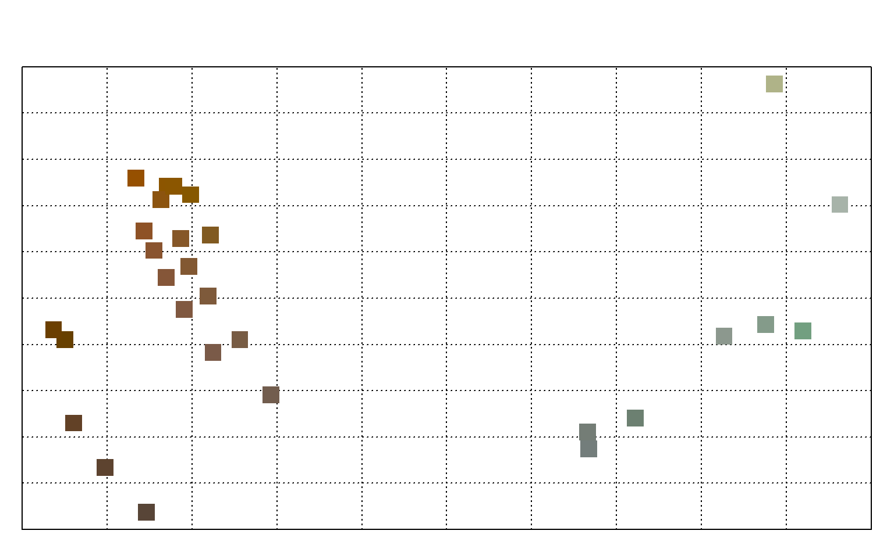
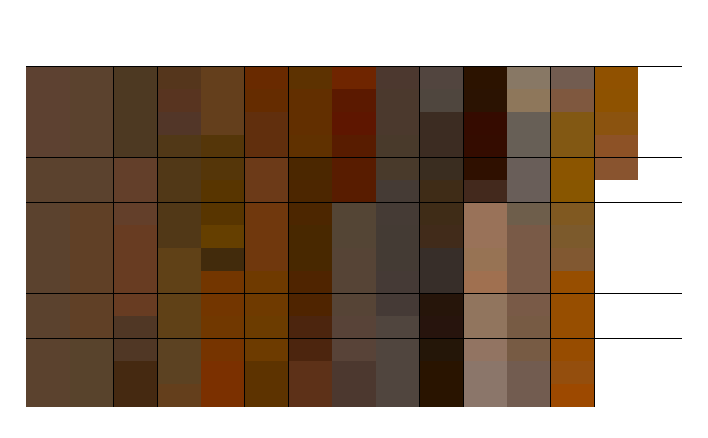
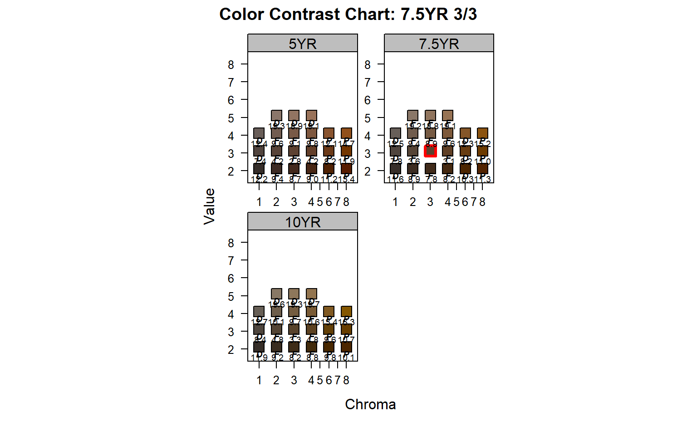

Simulate plausible soil colors based on proportions by Munsell "chip", or using a seed Munsell chip and threshold specified via CIE2000 color contrast metric.
simulateColor(method = c("dE00", "proportions"), n, parameters, SPC = NULL)
| method | simulation method, see details |
|---|---|
| n | number of simulated colors per horizon |
| parameters | a
Where |
| SPC |
|
a list, unless SPC is specified, then a SoilProfileCollection object
D.E. Beaudette
# m: representative or most likely color # thresh: dE00 threshold # hues: allowed Munsell hues p <- list( 'A' = list(m = '7.5YR 3/3', thresh = 5, hues = c('7.5YR')), 'BA' = list(m = '7.5YR 4/4', thresh = 8, hues = c('7.5YR')), 'Bt1' = list(m = '7.5YR 4/4', thresh = 8, hues = c('5YR', '7.5YR')), 'Bt2' = list(m = '5YR 4/5', thresh = 8, hues = c('5YR', '7.5YR')), 'Bt3' = list(m = '10YR 4/6', thresh = 10, hues = c('10YR', '7.5YR')), 'Cr' = list(m = '2.5G 6/2', thresh = 15, hues = c('2.5G', '2.5GY', '2.5BG')) ) # simulate (cols <- simulateColor(method = 'dE00', n = 10, parameters = p)) #> $A #> [1] "7.5YR 3/4" "7.5YR 3/3" "7.5YR 3/3" "7.5YR 3/3" "7.5YR 3/3" "7.5YR 3/3" #> [7] "7.5YR 3/2" "7.5YR 3/4" "7.5YR 3/3" "7.5YR 3/4" #> #> $BA #> [1] "7.5YR 4/4" "7.5YR 4/4" "7.5YR 4/5" "7.5YR 4/6" "7.5YR 4/3" "7.5YR 4/2" #> [7] "7.5YR 4/4" "7.5YR 4/4" "7.5YR 4/6" "7.5YR 4/4" #> #> $Bt1 #> [1] "5YR 4/4" "7.5YR 4/4" "5YR 4/5" "7.5YR 4/4" "5YR 4/6" "7.5YR 4/4" #> [7] "5YR 4/4" "7.5YR 4/3" "7.5YR 4/3" "7.5YR 4/6" #> #> $Bt2 #> [1] "5YR 4/4" "5YR 4/5" "5YR 4/6" "5YR 4/5" "5YR 4/3" "5YR 4/5" "5YR 4/5" #> [8] "5YR 4/5" "5YR 4/7" "5YR 4/5" #> #> $Bt3 #> [1] "10YR 4/12" "10YR 3/7" "10YR 4/12" "7.5YR 4/13" "10YR 4/6" #> [6] "10YR 4/8" "7.5YR 4/8" "10YR 4/8" "10YR 3/9" "10YR 4/11" #> #> $Cr #> [1] "2.5G 7/1" "2.5G 5/2" "2.5G 6/2" "2.5G 6/2" "2.5G 6/1" "2.5G 5/1" #> [7] "2.5BG 5/1" "2.5G 5/1" "2.5G 6/4" "2.5GY 7/3" #> # preview previewColors(parseMunsell(unlist(cols)), method = 'MDS')  # another example, this time using a larger dE00 threshold p <- list( 'A' = list(m = '7.5YR 3/3', thresh = 20, hues = c('10YR', '7.5YR', '5YR')) ) # simulate set.seed(54654) cols <- simulateColor(method = 'dE00', n = 200, parameters = p) # flatten cols <- unlist(cols) # tabulate, sort: most frequent color should be 7.5YR 3/3 sort(table(cols), decreasing = TRUE) #> cols #> 7.5YR 3/3 10YR 2/3 5YR 3/3 7.5YR 3/2 7.5YR 3/6 10YR 3/3 10YR 4/3 #> 20 7 7 5 5 4 4 #> 5YR 3/4 5YR 3/5 7.5YR 3/4 10YR 2/1 10YR 2/4 10YR 2/7 10YR 3/1 #> 4 4 4 3 3 3 3 #> 10YR 3/10 10YR 3/5 5YR 4/8 5YR 4/9 7.5YR 2/2 7.5YR 3/1 7.5YR 3/5 #> 3 3 3 3 3 3 3 #> 10YR 1/3 10YR 3/2 10YR 3/6 10YR 3/9 10YR 4/1 10YR 4/7 10YR 5/2 #> 2 2 2 2 2 2 2 #> 5YR 1/3 5YR 1/4 5YR 2/2 5YR 2/3 5YR 2/4 5YR 2/5 5YR 3/2 #> 2 2 2 2 2 2 2 #> 5YR 3/9 5YR 4/11 5YR 4/3 5YR 4/4 5YR 4/5 5YR 5/2 7.5YR 2/5 #> 2 2 2 2 2 2 2 #> 7.5YR 2/6 7.5YR 3/7 7.5YR 3/9 7.5YR 4/2 7.5YR 4/4 7.5YR 4/9 7.5YR 5/4 #> 2 2 2 2 2 2 2 #> 10YR 1/2 10YR 1/4 10YR 2/2 10YR 2/5 10YR 3/4 10YR 3/7 10YR 3/8 #> 1 1 1 1 1 1 1 #> 10YR 4/10 10YR 4/11 10YR 4/12 10YR 4/6 10YR 4/8 10YR 4/9 10YR 5/3 #> 1 1 1 1 1 1 1 #> 10YR 5/4 5YR 1/1 5YR 1/2 5YR 1/5 5YR 1/7 5YR 2/1 5YR 2/10 #> 1 1 1 1 1 1 1 #> 5YR 2/6 5YR 2/7 5YR 2/8 5YR 3/1 5YR 3/12 5YR 3/8 5YR 4/1 #> 1 1 1 1 1 1 1 #> 5YR 4/13 5YR 4/14 5YR 4/2 5YR 4/6 5YR 4/7 5YR 5/3 5YR 5/4 #> 1 1 1 1 1 1 1 #> 5YR 5/5 7.5YR 1/1 7.5YR 1/2 7.5YR 1/3 7.5YR 2/3 7.5YR 2/7 7.5YR 3/8 #> 1 1 1 1 1 1 1 #> 7.5YR 4/1 7.5YR 4/10 7.5YR 4/13 7.5YR 4/5 7.5YR 4/6 #> 1 1 1 1 1 # review colors previewColors(parseMunsell(cols))  # what does a dE00 threshold look like on 3 pages of hue? contrastChart('7.5YR 3/3', hues = c('10YR', '7.5YR', '5YR'), thresh = 20) 